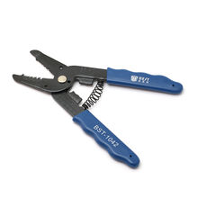

← каталог
Инструмент BST-1042 для снятия изоляции с проводов

Категория
🛠 Инструменты
Описание
Используется для зачистки проводов различных диаметров Длина: 17,5см
Где посмотреть / купить
amperkot.ru